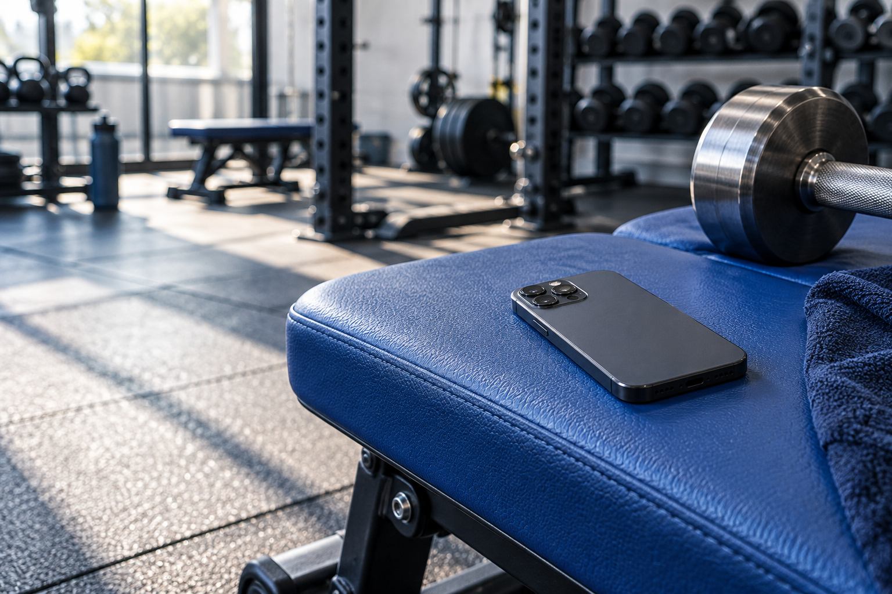
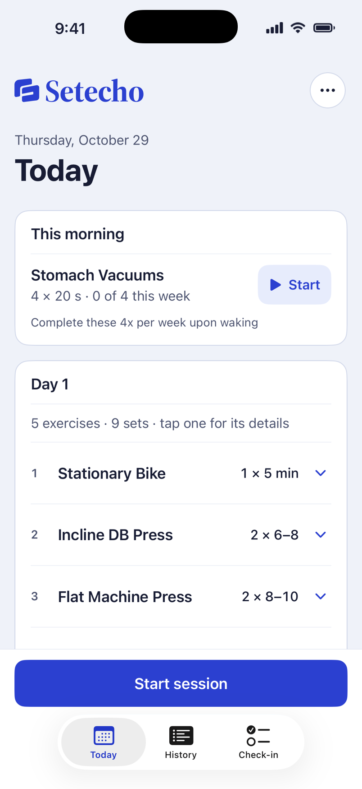
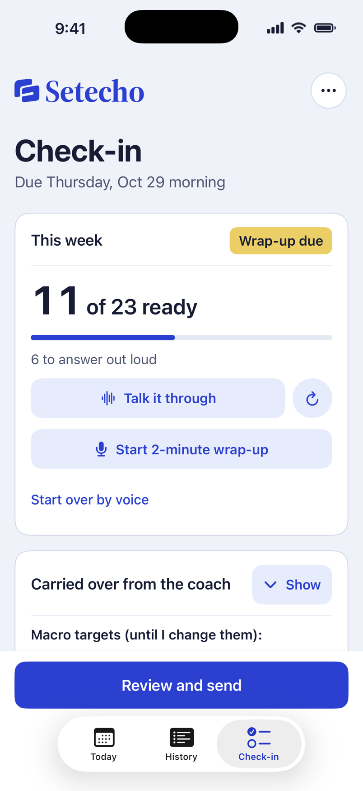
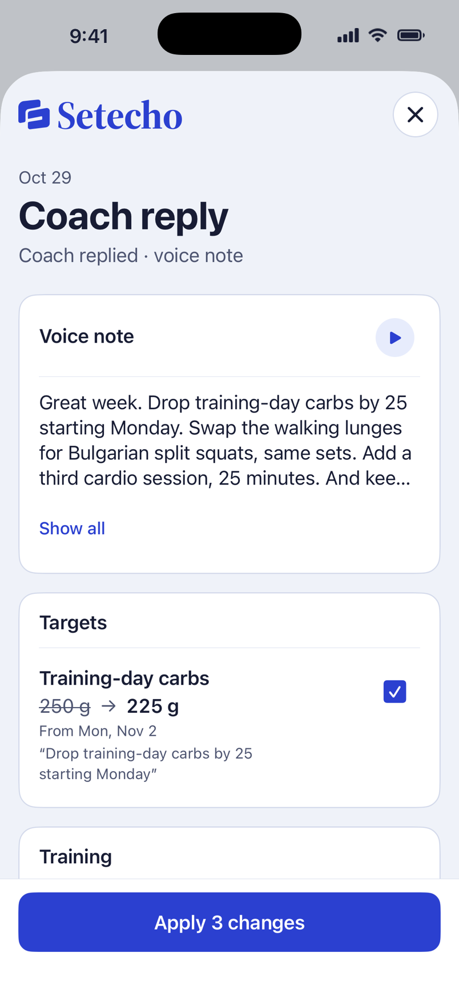

Your workout,
logged hands-free.
An iPhone app for athletes
with a human coach.
Record workouts, take progress photos, and prepare check-ins—the progress updates you send your coach on WhatsApp.
Try the exampleAn iPhone prototype for the Meta AI hackathon.

“Done. Eight reps at eighty pounds.”
From a workout
to your coach’s next update.
A set is a group of repetitions of an exercise.
Follow one recorded set through this fictional example.
Your coach sets the plan.
Setecho handles the records.
Built for bodybuilding athletes who follow a coach’s training plan and regularly send photos, workout records and health data for review.
Record workouts hands-free.
With your phone on a tripod, Meta’s SAM 3.1 tracks movement in your workout video so code can count repetitions (reps). Away from the camera, say the weight and reps you completed. You can correct the record by voice.
Prepare your coach’s progress update.
Setecho fills parts of your coach’s questionnaire from Apple Health and your workout log. Answer the remaining questions out loud and take four progress photos hands-free. Review the check-in before sending it through WhatsApp.
Approve your coach’s changes.
Import your coach’s text or voice message into Setecho. See each proposed training-plan change beside the coach’s exact words. The plan changes only after you approve, and you can undo the latest update.
Your workout, progress
and plan in one place.
Screenshots from the iPhone app.
All values are fictional examples (synthetic data).



What each Meta AI
model does.
Each model has a specific job. Numbers come from code, Apple Health or your own words. Spoken responses use Apple’s on-device speech.
- Muse Spark 1.3
- Reads the coach’s plan, understands requests and drafts progress updates.
- Voice Transcribe 1.0
- Transcribes your speech and your coach’s voice messages.
- SAM 3.1
- Tracks movement in workout videos so code can count repetitions and measure their speed.
More time training.
Less time keeping records.
Explore the walkthrough Setecho is a hackathon prototype. Public availability has not been announced.